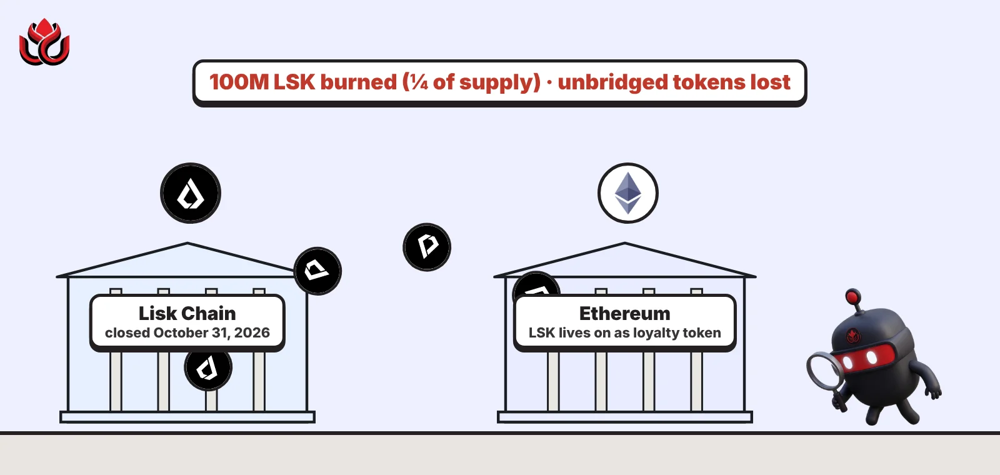
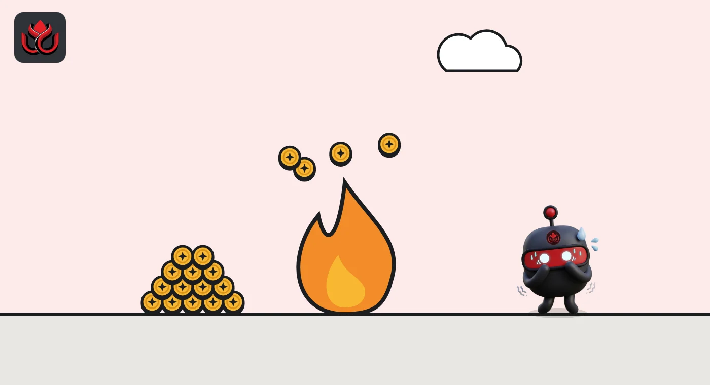
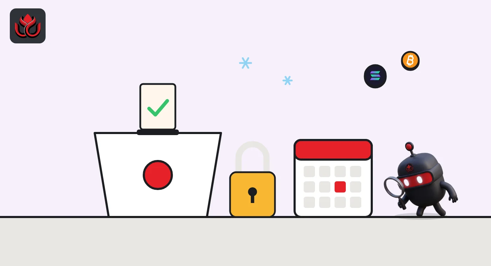

Lisk shuts its chain October 31 and burns a quarter of LSK. Tokens left behind are lost
Lisk set October 31, 2026, as the last day of its own blockchain and its DAO. It is burning 100 million LSK, a quarter of supply, and is turning the token into a loyalty reward on Ethereum. Anything not bridged out in time is lost, the project says.

Key points
- Lisk's support pages set October 31, 2026, as the shutdown date for the Lisk Chain and say there is no way to recover LSK left on it afterward.
- 100 million LSK, 25% of supply, is being burned in a one-time event, cutting total supply from 400 million to 300 million.
- LSK lives on as a loyalty token on Ethereum with the same contract. Holders on Ethereum or on exchanges did not need to do anything.
What Lisk is shutting down
Lisk is closing its own blockchain, the Lisk Chain, along with the DAO that governed it. The project's chain closure FAQ sets the shutdown for October 31, 2026, and is blunt about the stakes: LSK left on the chain after that date cannot be recovered.
The warning covered more than LSK. Anyone holding ETH, stablecoins, bridged tokens, DeFi positions or other assets on the Lisk Chain had to move them out before the deadline. LSK held on Ethereum or on an exchange was not affected.
Lisk says the wind-down follows the launch of a new product, and that the company is narrowing its focus to it. The support pages do not give a date for the original closure announcement, so we do not state one here.
What happens to the LSK token
LSK does not disappear. According to Lisk's LSK token FAQ, it becomes a loyalty token that lives on Ethereum. There is no swap, no redenomination and no new contract. The existing Ethereum token contract stays the same.
Lisk says businesses will earn LSK for running money operations on its new product and for referrals, and will later be able to pay in-app fees with it. The rollout is phased: referral rewards first, then fee payments, then points-style rewards redeemable in LSK. Dates depend on product releases. Lisk also says LSK is not required to use the product.
Exchange listings are being kept, and Lisk names Binance, OKX and Kraken plus decentralized exchanges on Ethereum as places where LSK trades.

A quarter of the supply burned
The biggest change for holders is supply. Lisk's token FAQ says a one-time burn of 100 million LSK takes total supply from 400 million to 300 million, and that no further burns are planned. (A burn sends tokens to an address nobody controls, so they are gone for good.)
The two support pages describe the burn slightly differently. The token FAQ calls it in progress. The DAO cessation page says the 100 million LSK was burned and that supply is now 300 million. The same page says about 46.5 million LSK left in the DAO treasury was transferred to Lisk Ltd, the company behind the project.
LSK supply before and after the burn
million LSK
Source: Lisk, LSK token FAQ and Lisk, DAO cessation FAQ
Why getting out took 8 to 11 days
Leaving the Lisk Chain was slow by design. Lisk told users to use only its official bridge at bridge.lisk.com and to type the address themselves. A withdrawal to Ethereum ran in three steps:
- Start the withdrawal on Lisk, choosing LSK on both sides (the bridge defaults to ETH).
- About an hour later, submit a "prove" transaction on Ethereum. This starts a 7-day challenge period, a safety window used by this type of network.
- After 7 days, submit a final claim transaction on Ethereum, paid for with a little ETH.
That is about 8 days in total. Staked LSK added more time: holders had to unlock (now without a penalty), wait 3 days and then unstake before bridging. Lisk told stakers to allow at least 11 days. Wrapped ether (WETH) could not go through the bridge directly and had to be unwrapped to ETH first.
Projects built on Lisk were offered an optional move to Celo, with a migration form and guide. Lisk said no funding or incentives should be assumed.

The DAO and its fund close too
On-chain governance ends with the chain. The DAO cessation page says the DAO, its funding seasons and the Lisk DAO Fund all wind down, and the governance forum and voting integration will be retired.
The fund, approved by the DAO in October 2025 with a 4 million LSK budget, closed early, with its legal handover completed in May 2026. Its three investments, LovCash, Cr3dentials and Jamit, moved to Onchain Ventures AG, and leftover capital went to Lisk Ltd minus early termination costs. Lisk Ltd also takes over the Arrakis vaults that supply LSK trading liquidity on Ethereum.
Timeline
Lisk DAO approves the Lisk DAO Fund with a 4 million LSK budget
Fund's legal handover and closing completed
Last safe day to start a staked LSK exit under Lisk's 11-day guidance
Lisk Chain shutdown date; LSK left on the chain can no longer be recovered
LC Insight analysis
This section is our reading of the facts above, not a statement of fact.
- We think the burn and the treasury transfer matter more for holders than the chain closure itself. A 25% supply cut is large, but about 46.5 million LSK now sits with a single company, so how Lisk Ltd uses it will shape supply far more than any future rewards program.
- Turning a layer-2 token into a loyalty point is a sharp change of role. LSK no longer secures or governs anything, so its value now depends on whether businesses actually use Lisk's new product and want the rewards.
- The 11-day exit is a reminder that leaving an optimistic rollup takes time. Users who wait for a final deadline can find the bridge window has already closed in practice.
What's next
- An on-chain record confirming the full 100 million LSK burn
- Any instructions from Lisk for users who missed the October 31 deadline
- Launch dates for LSK referral rewards and fee payments
- What Lisk Ltd does with the roughly 46.5 million LSK from the treasury
Disclaimer. This article is based on public information and the sources listed below as of the update time shown. It is for information only and is not investment, legal or tax advice. Figures may change as companies and authorities publish new data.